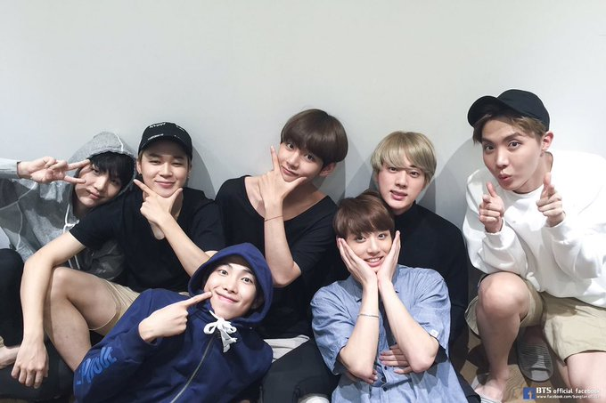

BTS
Ayo mengenal BTS
Siapa itu BTS?
Siapa itu BTS
BTS, merupakan singkatan dari ekspresi Korea Bangtan Sonyeondan (Hangul: 방탄소년단; Hanja: 防彈少年團), secara harfiah berarti "Bulletproof Boy Scouts".
Nama itu dikonseptualisasikan dengan pemikiran bahwa BTS akan memblokir stereotip, kritik, dan harapan yang menargetkan remaja seperti peluru dan melindungi nilai-nilai dan cita-cita remaja saat ini.
Di Jepang, mereka dikenal sebagai Bōdan Shōnendan (防弾少年団), yang diterjemahkan sama.
Pada bulan Juli 2017, BTS menambahkan sebagai tambahan dari Bangtan Sonyeondan atau Bulletproof Boy Scouts, nama ini juga merupakan singkatan dari "Beyond the Scene" sebagai bagian dari identitas baru mereka.
Tambahan nama mereka berarti "BTS merupakan orang muda yang tumbuh yang melampaui realitas yang mereka hadapi, dan maju.
Karya-karya dari BTS
Grup beranggotakan tujuh orang ini ikut menulis dan menghasilkan banyak lagu mereka, yang mana beberapa media telah menghubungkannya dengan kesuksesan mereka.
Gaya bermusik dan citra awal mereka terinspirasi oleh hiphop, seperti dalam lagu berjudul "N.O." dan "No More Dream".
Mereka kemudian memasukkan R&B dan rock dalam lagu berjudul "Danger" dan "Boy in Luv".
Lagu solo anggota grup dalam album berjudul Wings menggabungkan beragam aliran, seperti neo soul dalam lagu oleh V berjudul "Stigma", gospel oleh J-Hope berjudul "Mama" dan piano - rap dalam "First Love" oleh Suga.
BTS telah dipuji atas "berbicara jujur tentang topik-topik yang mereka anggap penting, bahkan dalam kumpulan masyarakat yang konservatif" oleh Jeff Benjamin dalam majalah Fuse.
Tamar Herman dari majalah Billboard mengatakan lagu-lagu band ini mempunyai tema berulang.
"School trilogy" mereka—2 Cool 4 Skool (2013), O!RUL8,2? (2013), dan Skool Luv Affair (2014)—mengeksplor "masalah dan kecemasan anak muda di masa sekolah."
"Not Today" dari You Never Walk Alone adalah lagu anti kemapanan, dengan pesan-pesan yang mengadvokasi kelompok minoritas, ketika Wings (2016) menyentuh tema kesehatan mental dan pemberdayaan perempuan.
Love Yourself 承: Her, EP pertama dari seri "Love Yourself", berkaitan dengan "cinta, persahabatan, kehilangan, [dan] kematian", ketika EP kedua, Love Yourself 起: Wonder, adalah sebuah video konsep berdurasi sembilan menit yang menyajikan sebuah video musik untuk "Euphoria", sebuah lagu solo oleh Jungkook.
Album studio ketiga BTS berjudul Love Yourself轉:Tear, merupakan EP ketiga dari seri, dan dipuji karena "berurusan dengan siklus kesedihan yang tetap hidup melalui perpisahan."
Album kompilasi ketiga BTS, berjudul Love Yourself 結: Answer, merupakan yang keempat dan terakhir dari seri ini, dan dipuji atas kesimpulan album untuk tema menyeluruh dari era "Love Yourself", yang disebut "sebuah adikarya dari BTS yang hanya dapat dijangkau oleh beberapa artis, boy band atau lainnya."
Penghargaan yang didapat oleh BTS
BTS mempunyai pengikut yang besar di media sosial, yang kemudian membuat mereka memenangkan penghargaan Top Social Artist di Billboard Music Awards 2017 setelah menerima lebih dari 300 juta dukungan dan menjadi grup Korea pertama yang memenangkan sebuah BBMA.
BTS juga kembali memenangkan penghargaan Top Social Artist di Billboard Music Awards 2018.
Mereka menjadi selebritas yang paling banyak dicuitkan pada tahun 2017, menjadi yang "paling banyak disukai dan dicuit ulang lebih dari setengah milyar kali (502 juta)" diseluruh dunia.
Grup ini pertama kali masuk dalam edisi tahun 2016 di Billboard Year-End terutama dalam World Albums Artist dan World Digital Song Artists.
Mereka masuk lagi dalam edisi tahun 2017 berada di posisi 10 sebagai Top Artists, kedua di Top Artists - Duo/Group, dan pertama di Social 50 Artists dan World Albums Artists.
Pada tahun 2018, BTS diberi penghargaan sebagai Outstanding Achievement in Music di The Asian Awards.
BTS juga menjadi grup Korea pertama yang menerima sebuah penghargaan di American Music Awards, memenangkan penghargaan sebagai Favorite Social Artist.
Pada bulan Oktober 2018, BTS dianugerahi Hwagwan kelas lima Order of Cultural Merit dari Presiden Korea Selatan atas kontribusi mereka menyebarkan budaya dan bahasa Korea.
Cek Musik Videonya
1. BTS (방탄소년단) 'Dynamite' Official MV
2. BTS (방탄소년단) '작은 것들을 위한 시 (Boy With Luv) (feat. Halsey)' Official MV

- Pagi
- Keadaan ketika matahari muncul
- senja
- Keadaan ketika matahari tenggelam
| Nama |
Umur |
| Jimin |
25 |
| Jhope |
26 |
| Jungkook |
23 |